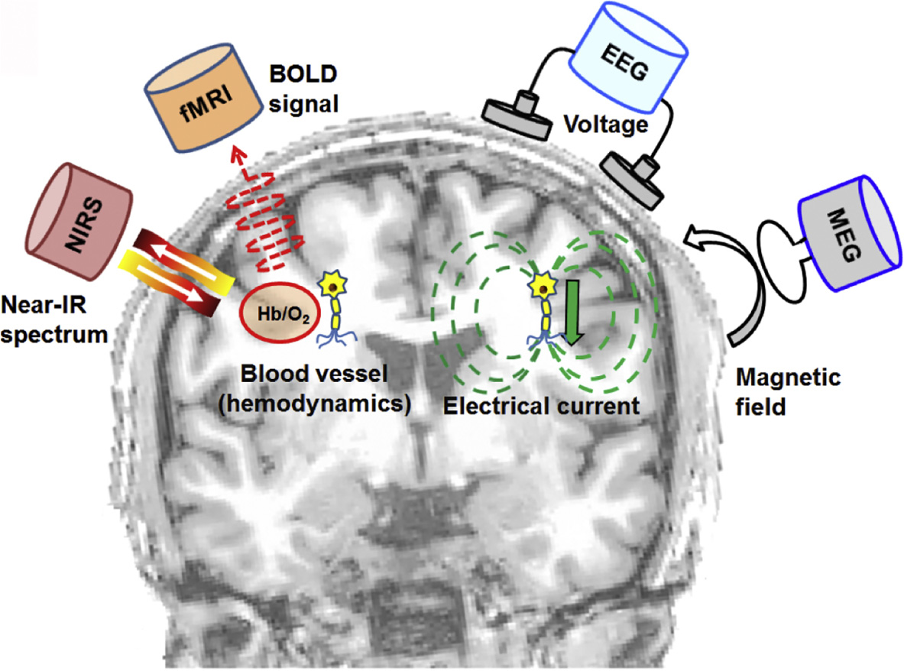
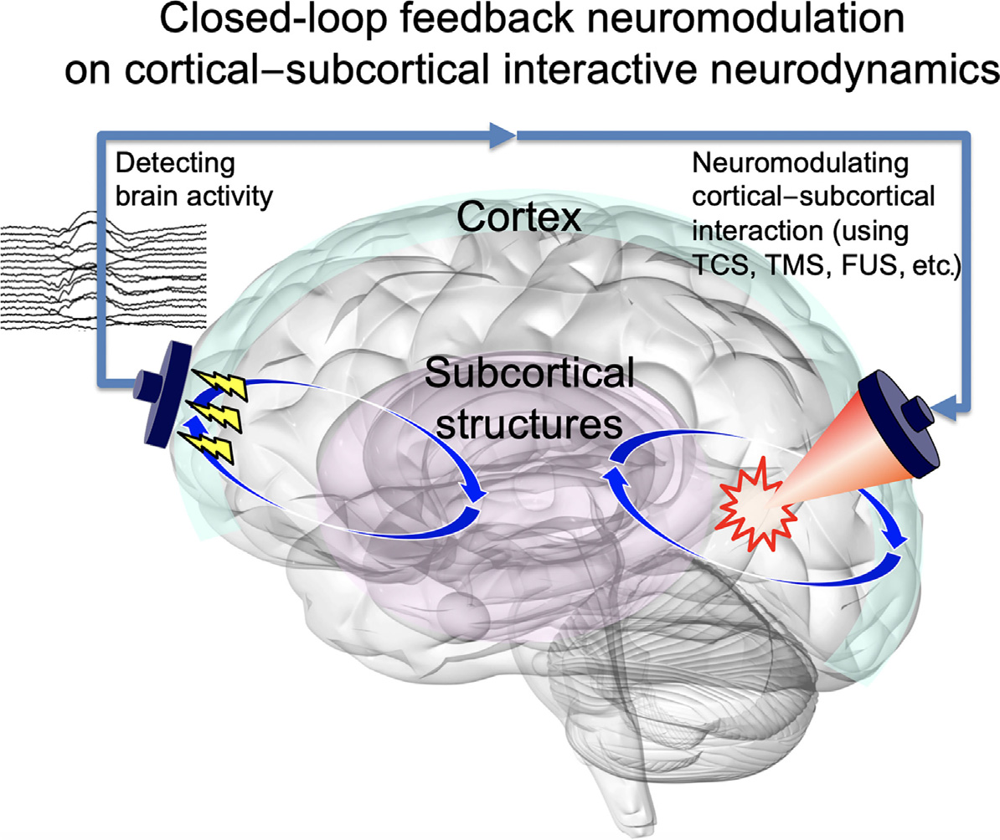
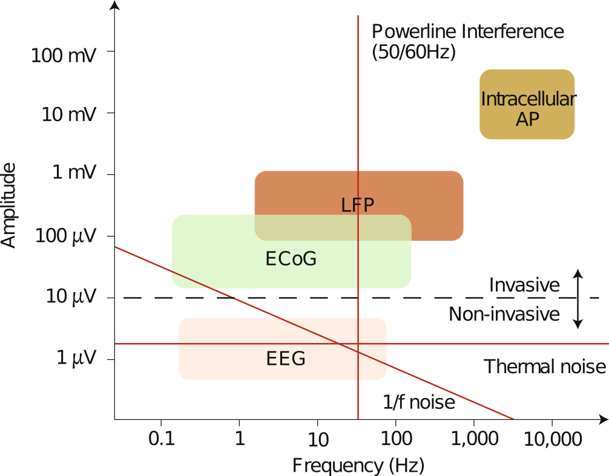
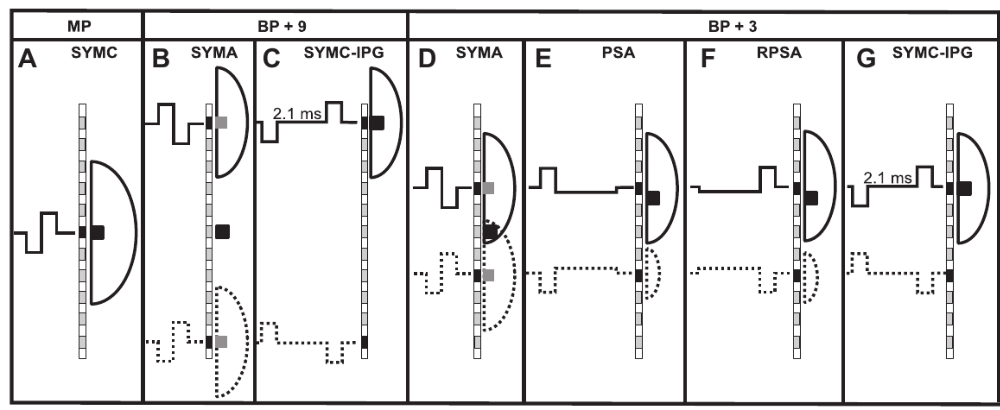
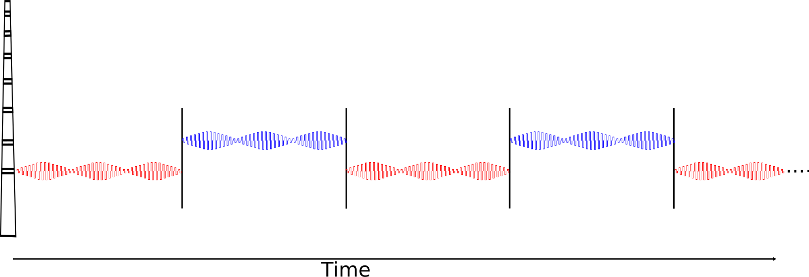
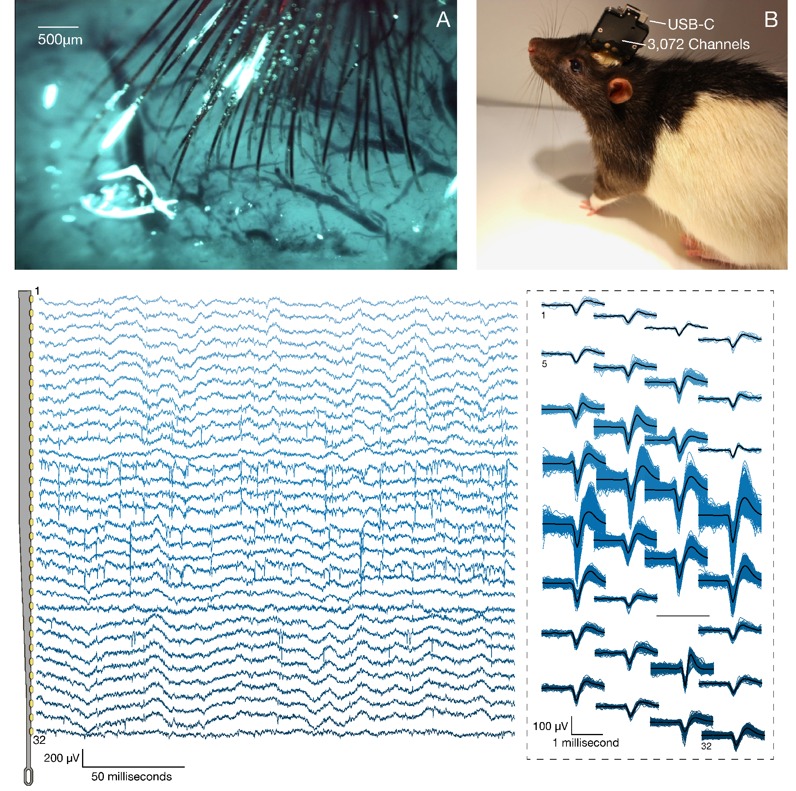
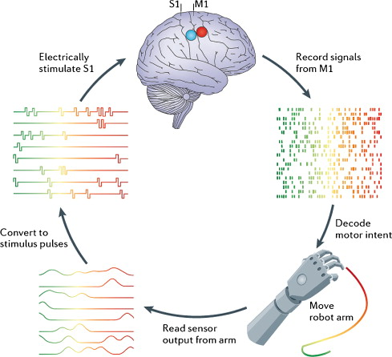

Advancements in electronics able to interfacing with the nervous system is a rapidly advancing. The implications of these technologies reach basic sciences and medical applications.
Furthermore, neural interfaces can provide a direct, electrical bridge between the nervous systems and machines with the potential of transferring of information in one or both directions.
1949 voltage clamp technology -> Hodgkin and Huxley to record currents carried by sodium and potassium ions through nerve cell membranes using electrochemical gradients.
1952 Hodgkin and Huxley (1952) model mathematically describes the membrane potentials using a resistor–capacitor (RC) circuit model
1957 André Djourno and Charles Eyriès original cochlear implant
1961 William House cochlear first implants
1978 First multiple channel CI was implanted into deaf volunteer
1991 Utah electrode array
1997 Deep brain stimulation for Parkinson’s Disease
2002 first retinal implant; closed-loop brain machine interfacing in monkeys
2009 BrainGate2: brain implant system built designed to help those affected by neurologic disease or injury.
2013 Responsive Neurostimulation (RNS) for epilepsy (Thomas and Jobst 2015).
2019 Neuralink 3,072 electrode array (Musk and Neuralink 2019)
The Hodgkin-Huxley model is the central pillar of modern neuroscience research. It implications range from molecular investigations of the structural basis of ionic channels to the basis of neural interfacing with technology.
Some good simulators Brian2, NEURON, many others
A neural interface builds a bidirectional communication channel between a subject’s nervous system and a man-made device Non-invasive methods measure the compound extracellular activity of hundreds of thousands.

Indirect:
Blood oxygen level dependent response (BOLD): a proxy measure of neural activity
Direct:
Advantages
Disadvantages

Advantages
Disadvantages
Is there more?

Advantages
Disadvantages
 

Challenges
Neural signal feature extraction
Hardware - integration of stimulating and recording front-end - electrical artifact reduction methods - signal processing

Anumanchipalli, Gopala K., Josh Chartier, and Edward F. Chang. 2019. “Speech Synthesis from Neural Decoding of Spoken Sentences.” Nature 568 (7753): 493–98. https://doi.org/10.1038/s41586-019-1119-1.
Chaudhary, Ujwal, Niels Birbaumer, and Ander Ramos-Murguialday. 2016. “Brain–Computer Interfaces for Communication and Rehabilitation.” Nature Reviews Neurology 12 (9): 513–25. https://doi.org/10.1038/nrneurol.2016.113.
Hodgkin, A. L., and A. F. Huxley. 1952. “A Quantitative Description of Membrane Current and Its Application to Conduction and Excitation in Nerve.” J Physiol 117 (4): 500–544. https://www.ncbi.nlm.nih.gov/pmc/articles/PMC1392413/.
Musk, Elon, and Neuralink. 2019. “An Integrated Brain-Machine Interface Platform with Thousands of Channels.” bioRxiv, August, 703801. https://doi.org/10.1101/703801.
Sobot, Robert. 2018. “Implantable Technology : History, Controversies, and Social Implications [Commentary].” IEEE Technology and Society Magazine 37 (4): 35–45. https://doi.org/10.1109/MTS.2018.2880167.
Thomas, George P, and Barbara C Jobst. 2015. “Critical Review of the Responsive Neurostimulator System for Epilepsy.” Med Devices (Auckl) 8 (October): 405–11. https://doi.org/10.2147/MDER.S62853.